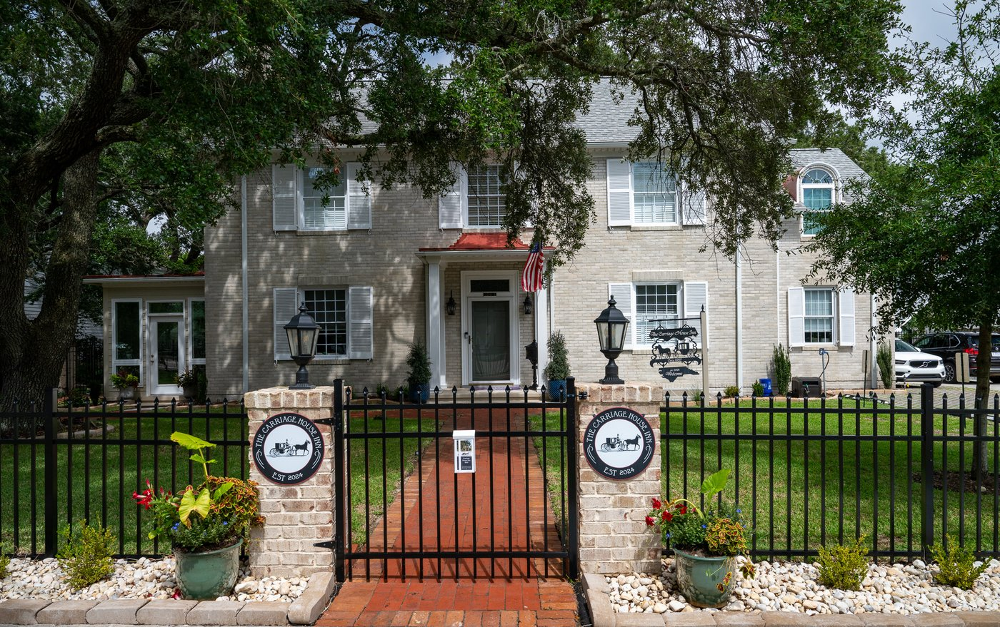

History of 209 E. Moore Street, the Carriage House Inn

The history of 209 E. Moore Street begins with the arrival of the Plaxco family in the early 1930s. Robert Frank “R.F.” Plaxco, his wife, Bess Miller Plaxco, and their infant daughter, also named Bess, came to Southport at a time when the nation was reeling from the economic crash of 1929. While much of the country struggled, Southport’s menhaden industry remained comparatively steady, buoyed by the activity of its fishing fleets and processing plants along the waterfront.
R.F. Plaxco came to Southport to take a leadership role with the Brunswick Navigation Company. He served as Secretary–Treasurer and acted as one of the firm’s principal managers, overseeing both financial affairs and the day-to-day operations of the menhaden fleet. He held an ownership share in the company, placing him firmly within the group directing one of Southport’s most important maritime businesses.
As the Plaxcos settled into Southport, their family soon expanded. Their son Robert Frank “Bud” Plaxco Jr. was born in 1932, most likely at the recently opened Brunswick County hospital (now Dosher Memorial) followed six years later by their youngest, John Clarence Plaxco. All three children would grow up deeply connected to the rhythms of Southport, its school, its waterfront, and its tight-knit community.
A Brick Home on Moore Street
In May 1937, the Plaxcos purchased a generous 132-by-165-foot lot on East Moore Street from the heirs of W. G. Curtis for $3,000. The property had once been the Curtis family home, but by then the structure had fallen into disrepair. The Plaxcos chose to tear it down and begin anew. Their plans were unusual for Southport. The new house had solid double-brick exterior walls which provided good insulation and solid construction. It was one of only a few houses in Southport that had a full basement, and likely the only house in town that had a bathroom attached to each bedroom.
When the 1940 Census was taken two years later, the home’s value was estimated at $8,000, the highest residential assessment in Southport. The figure reflected both the size of the house and the family’s increasing prosperity.
The home was ready for move-in during the fall of 1938, as the family was preparing to welcome their third child in January. They hoped to be fully settled by the baby’s arrival. Those plans shifted abruptly on November 9th, when John Clarence Plaxco made an unexpected and dramatic entrance into the world.
Bess had endured a difficult pregnancy and was hospitalized at James Walker Hospital in Wilmington, where doctors feared they might lose the baby, the mother, or both. Miraculously, they both survived. Newborn John, weighing just 3 lbs. 3 oz., was the smallest and most premature infant the hospital staff had ever cared for. Without an appropriate incubator, they put him in a shoebox warmed by heat lamps. It was four weeks before they could bring him home to Southport.
When they finally brought John home, it was to their newly built home on Moore Street. The family had made the move while he was still in the hospital. It was there, surrounded by care and attention, that Bess soon recovered, and John gained strength. By age four, he was one of fifty-two entrants in the Southport baby contest, winning both Most Popular Baby and Most Attractive Boy’s Costume, an indication that he had rebounded after his precarious beginning.
Embracing Community Life
The Plaxcos quickly became part of Southport’s daily life. Bess served as a room mother at Southport School on Nash Street and was active in the PTA. Her husband, R.F., also participated, helping to plan improvements to the school’s stage and advocating for new playground equipment. He was among the founders of the Southport Civitan Club, lending his energy to projects that strengthened civic life.
Their three children, Bess, Bud, and John, appeared regularly in the pages of the State Port Pilot. They took part in school programs, earned honor-roll recognition, and joined in community contests and performances. John was photographed riding his pony through town, while Bud once appeared on a school-sponsored radio program. In 1942-43, young John served as the Southport High School senior class mascot, and that spring the class was welcomed to the Plaxco home for a festive St. Patrick’s Day party.
One of the most personal remnants of those early years still stands in the front side yard: a graceful ginkgo biloba tree planted as a housewarming gift for Bess soon after the family moved into their new home. Now nearly ninety years old, the tree turns a brilliant gold each fall and has become one of the quiet landmarks of East Moore Street. Its significance is recognized even beyond the family—the ginkgo is featured in the Southport Tree Tour brochure as an example of the town’s distinctive historic plantings. For decades, another small but meaningful reminder remained just beyond it: a patch of concrete along the curb where the Plaxcos’ oldest son, had scratched the words “Bud’s House” into the wet cement as a boy. Although the marking was lost when the city recently updated the curbing, longtime neighbors still remember it as part of the home’s story.
Taking to the Air: Innovation in the Menhaden Industry
Aviation played an unexpected role in the Plaxco family story. At a time when the menhaden industry was evolving, R.F. Plaxco became an early innovator, using airplanes to spot schools of fish from above. Brunswick Navigation Company hired a talented pilot, Hall Waters, as a fish spotter. Waters also taught the Plaxco children to fly, with Bess, 18, and Bud,16, getting their student licenses the same week.
World War II and the Plaxcos
During the war, R.F. took on a key leadership role at home, spearheading five county-wide war bond drives. Under his direction, Brunswick County repeatedly exceeded its goals, raising tens of thousands of dollars.
As they grew older, the children went away to attend school. Bess attended Fassifern School, a girls’ preparatory school in Hendersonville, North Carolina and Bud and John attended the Fishburne Military School in Waynesboro, Virginia. They all continued to excel in academics and leadership, but they returned home often, maintaining their strong ties to Southport.
Long Beach Years and Hurricane Hazel
In the early 1940s, the Plaxcos acquired property on Long Beach, eventually owning nearly half a mile of oceanfront. In 1944, they sold their Moore Street home to J. P. Cranmer and moved to Long Beach full-time for several years. In 1950, they repurchased the Moore Street house for $20,000, at a time when the typical North Carolina home cost $4,900. For several years, they kept their Long Beach home for use in the summer and holidays.
In February 1954, the Plaxcos sold their Long Beach property. Their timing was fortunate. Just eight months later, Hurricane Hazel, the only Cat 4 hurricane to hit North Carolina in the 20th century, struck Southport and Oak Island. Of the estimated 300 homes on the island, only five were left standing. The Plaxcos’ former house was one of the ones washed out to sea.
By then, the older children were grown and had moved out of North Carolina, but sixteen-year-old John was in Southport during the storm. It was an experience he never forgot. As John later recalled that morning, he was aboard The Plaxco, a converted World War I minesweeper and one of Brunswick Navigation’s menhaden boats. The storm roared in with almost no warning, and the crews raced to escape the docks. Three boats were tied together, turned into the wind, and ridden out through the storm’s peak. When Hazel finally passed, the vessels were found nearly a mile inland and later had to be dug out and guided back toward the waterway.
A Fireplace with a Past
One of the most distinctive architectural elements in the Plaxco home is the parlor fireplace and its historical surround, which is in a Rococo design with curved jambs and elaborate carvings. The surround originally belonged to the Curtis house that had sat on the same property. When that house was demolished, the fireplace surround was discarded on the curb. A Plaxco relative with an eye for antiques spotted it, rescued it, and arranged for it to be incorporated into the parlor of the newly built 1938 house. Family lore holds that its design is identical to one that can be found in the White House. Whether or not the tradition is true, the fireplace remains a remarkable piece of Southport’s history.
The Ballast Stone Wall
The house was originally enclosed by a low stone wall built from ballast stones, which were rounded, sea-worn rocks carried in the holds of sailing ships as they approached the Cape Fear. Vessels arriving without cargo routinely offloaded their ballast at Southport, and these stones found new purpose throughout the town in foundations, piers, grave markers, and garden borders.
As John later recollected, the wall around the property was assembled with the help of two young boys who were paid a penny per stone to haul the heavy rocks up from the river’s edge. One stone at a time, their labor helped create the ballast-stone wall that once framed the home and quietly tied it to Southport’s long maritime past.
December 16, 1950: A Wedding in the Plaxco Home
One of the most memorable events in the history of the house occurred on December 16, 1950, when the Plaxcos’ daughter, Bess Miller Plaxco, was married in the living room. With this year’s Holiday Tour of Homes being held just days before the seventy-fourth anniversary of that celebration, visitors will pass through the very rooms where the ceremony unfolded.
On that occasion, the home was decorated with evergreens, white tapers, and abundant poinsettias in keeping with the spirit of the holiday season. Accompanied by piano music, the bride was met at the foot of the staircase by her father, R.F. Plaxco, who escorted her into the living room. There, an improvised altar had been arranged in front of the black and white marble fireplace.
The mantel was decorated with tall white tapers burning in five-branched candelabra that stood on either side of a centerpiece of red and white poinsettias. Additional poinsettias were placed around the hearth with magnolia leaves providing a lush backdrop. The ceremony took place in this magical and heartfelt setting, filled with candlelight and winter greenery.
Immediately afterward, a reception was held in the home. Guests were presented to the receiving line, which included the bridal party and both sets of parents. The bride’s table, set in the dining room, was covered with an imported Italian cut-work cloth. Five-branched candelabra glowed at either end, framing a central arrangement of white poinsettias. A three-tiered wedding cake stood at one end of the table, and a cut-glass punch bowl at the other. Additional poinsettias decorated the downstairs rooms, and wedding gifts were displayed in the library.
Leaving Southport, But Keeping it in Mind
In 1956, the Plaxcos sold the Moore Street home to Dr. Burdette and returned to Bess’s hometown of Lincolnton, North Carolina. Yet Southport remained a place of deep attachment for the entire family. Seven years later, when R.F. died at age 66, his obituary requested that memorials be sent to Southport Presbyterian Church. Throughout his life, their son John carried fond memories of his childhood spent on Moore Street: his pony, the waterfront, the airplanes, and even the hurricanes. When Bud died at nearly 88, his obituary proudly noted that he had been “born and raised in Southport.”
A Lasting Part of Southport’s Story
The Plaxco family lived in Southport during some difficult times: the Depression, World War II, and Hurricane Hazel. Despite these challenges and their own medical issues, they developed a thriving business, built one of the town’s most prominent homes, raised three accomplished children, and contributed deeply to civic, educational, and maritime life. From innovations in the menhaden industry to wartime service, from the beauty of Long Beach summers to the joy of a Christmas wedding that once filled its historic rooms, their home on Moore Street became intertwined with Southport’s history. Today, as a welcoming bed and breakfast, it continues to share that story with all who pass through its doors.
Carriage House Inn
Nearly ninety years after it was originally built, the house still holds true to its original design, with all four bedrooms and bathrooms having the original bathroom tile and hardwood floors. The main floor retains the original fireplaces, mantles, and hardwood floors. The original construction has been complemented by the kitchen, sunroom, and screen porch additions. The full basement that has been renovated as a living space for the owners/on-site managers.
The Carriage House Inn has had extensive restorations to the landscaping, fencing, pathways, and landscape lighting. The grounds of the property contain the original carriage house and ancient live oak trees that are prominent within Southport. Currently undergoing renovations and restorations, the carriage house itself will be completed in the early spring of 2026.